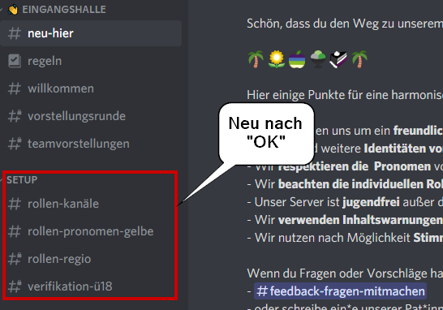

Discordanleitungen
Table of Contents
Wie geht Discord? #
Wenn du neu auf Discord bist, wirst du sicher den Discord Anfängerleitfaden hilfreich finden. Noch mehr Infos sowohl für Einsteiger*innen als für versiertere User*innen gibt es in den Erklärungen zur Benutzeroberfläche . Im Folgenden gehen wir nur auf die Dinge ein, die für unseren Server spezifisch oder essentiell sind.
FAQ – Frequently Asked Questions #
Ich klicke in #neu-hier auf üÜó, aber nichts tut sich. Was soll ich tun? #
Bitte klicke auf das üÜó unter der Nachricht in #neu-hier :

Wenn du unter der Nachricht kein üÜó siehst, ist die Anzeige der
Reaktionen bei dir ausgeschaltet. Gehe dazu in deinen Einstellungen auf
APP-Einstellungen > Text & Bilder und aktiviere unter dem Punkt EMOJI
die Option “Emoji-Reaktionen bei Nachrichten anzeigen”. Das üÜó m√ºsste
nun sichtbar sein.
Solltest du auf das richtige üÜó geklickt haben, aber nichts passiert, dann ist m√∂glicherweise unser Bot offline. Gib in #willkommen Bescheid, dort hilft dir jemand.
Kan√§le, Threads, Rollen, Pings … Was bedeutet das alles? #
- Kanäle: Einzelne Räume zur Kommunikation. Es gibt Text- und Sprachkanäle (engl. text channels und voice channels (VCs)).
- Threads: Temporäre Textkanäle, die etwas anders funktionieren als Textkanäle: Sie sind von allen erstellbar und nur zu verfolgen, wenn ihnen beigetreten wird (s. Threads).
- Kategorien: Sie fassen mehrere Kan√§le in Gruppen zusammen zur besseren Übersichtlichkeit, z.B. On-Topic, Events, …
- Rollen: Sie dienen v.a. dazu, Berechtigungen zu verwalten und Kanäle freizuschalten. Sie werden automatisch per Klick auf Emojis vergeben.
- DM: Direct Messages (auch private message (PM) oder Private Nachricht (PN)) sind Nachrichten zwischen zwei User*innen außerhalb von Servern. Du findest sie in deinem Home-Bereich (dem Symbol ganz links über den Servericons). Manche möchten keine DMs erhalten, frage also vorher nach bzw. beachte unsere gelben Rollen.
- Pings: Sie machen andere User*innen auf Nachrichten aufmerksam und können an einzelne Accounts oder ganze Rollen gerichtet sein (s. die nächste Frage).
Mehr Bergiffe und Erklärungen findest du in unserem Glossar.
Ich werde darauf hingewiesen, dass ich jemanden gepingt habe. Was habe ich getan und wie kann ich es lassen? #
Pingen ist eine Funktion, bei der Discord durch Töne, rote Hinweise und Farbunterlegung auf Nachrichten aufmerksam macht. Es gibt zwei Möglichkeiten, Menschen direkt zu pingen:
- Wenn du Personen mit
@erwähnst, z.B. @unser Helferlein - Wenn du auf Nachrichten direkt reagierst, ohne den Ping auszustellen
Discord pingt bei Antworten automatisch. Das lässt sich mit einem Klick
auf @AN bzw. @ON ausstellen.
Es gibt einige Menschen, die aus verschiedenen Gr√ºnden nicht gepingt werden m√∂chten. Auf dem Server haben wir deswegen “gelbe Rollen”, die beschreiben, wenn Menschen nicht gepingt werden wollen und sich schnell √ºber das gelbe Ausrufezeichen () neben den Usernamen erkennen lassen. Bitte achte darauf, diese Personen nicht zu pingen.
Ich möchte auf eine Nachricht mit einem Emoji reagieren, aber nichts passiert. Was ist los? #
Möglicherweise hat dich die Person blockiert, von der die Nachricht stammt (s. Blockierungen). Das kann aus ganz verschiedenen Gründen gewesen sein und muss nichts mit deiner Person zu tun haben. Wenn dich die Situation beunruhigt, wende dich sehr gerne an unsere @Community-Care.
Ich versuche das Gendersternchen zu nutzen, aber Discord zeigt es nicht an / mein Text wird kursiv #
Es gibt verschiedene Zeichen, die in Discord genutzt werden, um Text zu
formatieren (s. Formatierungshilfe). Darunter
fällt *, das Text kursiv und/oder fett formatieren kann. Wenn du das
verhindern willst, setze ein \ vor den Stern. Dadurch wird das Sternchen
nicht mehr interpretiert und einfach angezeigt:
Alle Mitleser*innen und Zuhörer*innen-> Alle Mitleserinnen und ZuhörerinnenAlle Mitleser\*innen und Zuhörer\*innen-> Alle Mitleser*innen und Zuhörer*innen
Relevante Funktionen von Discord #
Spoiler #
Verwende zwei Symbole | vor und hinter dem Text, um ihn zu verstecken. Alternativ kannst du am PC deinen Text auch mit dem Cursor markieren und dann auf das Auge-Symbol klicken. Vor dem Text gibst du eine kurze Notiz, was sich darin verbirgt.
Beispiel:
CN Sexualität ||Text oder Link|| -> CN Sexualität Text
oder Link
Threads #
Threads sind temporäre Räume, die wie untergeordnete Kanäle
funktionieren. Um einen Thread zu erstellen, zeige auf eine Nachricht
(Desktop) bzw. drücke lang auf eine Nachricht (mobil) und wähle das
#-Symbol. Threads haben eine Lebenszeit, bevor sie automatisch
archiviert werden, und einen Namen. Schreibe eventuelle CNs bitte
direkt in den Namen des Threads. Du kannst einem Thread auch folgen,
ohne darin geschrieben zu haben. Klicke dafür im Thread auf die drei
Punkte oben rechts > Thread Beitreten (Desktop) bzw. drücke auf den
Button Beitreten (mobil). Mehr Info dazu hier
(englisch) .
Formatierungshilfe #
Texte auf Discord können mit Sternchen, Unterstrichen und anderen Symbolen formatiert werden. Infos dazu gibt es in der Discord Hilfe .
Blockierungen #
Es ist möglich, andere User*innen per Rechtsklick auf den Benutzernamen und die Option blockieren für sich persönlich zu blockieren. Wenn es nicht lösbare Konflikte gibt oder um etwas Abstand zu gewinnen, kann dies eine technische Möglichkeit sein. Konsequenzen sind:
- die Nachrichten dieser Person werden für dich versteckt
- die Person kann dir keine DMs mehr schreiben
- die Person kann keine Reaktionen mehr auf deine Beiträge senden oder dich pingen
Der letzte Punkt bedeutet, dass eine von dir blockierte Person auch nicht auf Umfragen reagieren kann, die du schreibst. Benutze daher für Umfragen immer unseren Bot @EasyPoll (s. Umfragen mit Easypoll). Wir möchten dir ans Herz legen, bei Konflikten mit der @Community-Care Kontakt aufzunehmen: Wir helfen dir sehr gerne, haben ein offenes Ohr und können zum Beispiel Gespräche mediieren. Schreib uns gerne an!
Bots #
Wir nutzen diverse Bots, um Discord für uns und euch attraktiver/einfacher/besser zu gestalten.
Anonyme Nachrichten mit Voltaire #
Es gibt die Möglichkeit, anonyme Nachrichten zu senden. Dazu schickst du unserem Bot @voltaire eine DM in folgendem Format:
An die Community in #feedback-fragen-mitmachen:
send_server "Aspec*German" feedback-fragen-mitmachen <hier_dein_text>
An das ganze Team:
send_server "Aspec*German" feedback-an-das-team <hier_dein_text>
An die @Community-Care:
send_server "Aspec*German" commcare-gebraucht <hier_dein_text>
Ersetze in den Beispielen <hier_dein_Text> inklusive der Klammern mit
deiner eigenen Nachricht. Sie landet dann im passenden Kanal und ist
nicht zurückzuverfolgen.
Musik abspielen mit Probot #
- @unser Begrüßerlein besitzt die Möglichkeit, einem Sprachkanal beizutreten und Musik abzuspielen. Der Bot greift dabei auf Youtube zurück und spielt dann die Tonspur von den Videos ab.
- Wenn ihr den Bot leiser/lauter oder stummschalten wollt, könnt ihr das über rechtsklick auf den Botnamen und den Schieberegler bzw. den Button darunter tun.
- Bitte geht angemessen mit dem Bot um. Nicht alle haben zur gleichen Zeit Lust auf Musik, haben einen anderen Musikgeschmack oder möchten sich allein auf das Gespräch konzentrieren. Bei Diskrepanzen, ob und welche Musik gehört wird lässt sich sicher gemeinsam eine Lösung finden.
- Die wichtigen Befehle sind:
&play [Name des Videos]Der Bot sucht bei YouTube und nimmt das erste Video. Genauere Titel oder der Link führen zu besseren Ergebnissen&skipÜberspringt das aktuelle Lied in der Warteschlange&searchErmöglicht die Auswahl auf Vorschlägen die der Bot bei Youtube findet&queueZeigt die aktuelle Warteschlange&npNennt das aktuelle Lied&stopBeendet die Wiedergabe und der Bot verlässt den Voice-Chat
- Weitere Befehle findet ihr in der Dokumentation von Probot .
Umfragen mit Easypoll #
- Mit dem Slash-Befehl
/pollk√∂nnt ihr Umfragen erstellen in allen Kan√§len, die ‚Äúeasypoll‚Äù in der Kanalbeschreibung haben. Discord begleitet euch dabei anhand von visuellen Hinweisen durch die Erstellung. - Eigene Emojis: Wollt ihr statt üÖ∞Ô∏è üÖ±Ô∏è usw. spezielle Emojis (nur Discord-eigene!) verwenden, nutzt einfach das Emoji vor eurer Antwort (also z.B. üôà test).
- Mehrfachantworten: Mit maxchoices könnt ihr die maximale Anzahl an Reaktionen bestimmen, die eine Person abgeben darf.
- Mehr Infos gibt es im FAQ von Easypoll .
Geburtstagsrolle mit Birthday Bot #
Setzt euren Geburtstag in
#botspam ,
indem ihr den Befehl bday set benutzt. Der Bot nimmt euch an die Hand
und erklärt genau, wie ihr eure Zeitzone (z.B. Europe/Berlin) und euren
Geburtstag (z.B. 28/08 für den 28. August) setzen könnt. Der
Geburtstag wird im Bot global gespeichert und kann nun auch auf anderen
Servern, wo der Bot aktiv ist, genutzt werden. Eine Änderung ist 5 mal
möglich.
Schneller geht es auch, z.B. mit bday set 28/08. Das nutzt die
Standardzeitzone auf dem Server (Europe/Berlin) und es muss nur noch
der Geburtstag entsprechend angepasst werden.
Mehr Info gibt es in der Doku .
Kalenderfunktionen mit Sesh #
Wir haben einen Kalenderbot namens @sesh. In allen zu Sprachkanälen zugehörigen Textkanälen könnt ihr damit Termine erstellen:
# Termin mit offenem Ende
!s create Name des Treffens 2022-12-31, 23:00
# Termin mit Start- und Endzeit
!s create Name des Treffens 2021-06-25, 19:30 to 21:00
# Erstellung von Terminen mit mehr Optionen
!s create
Nachrichten dieser Art werden nach Terminerstellung gelöscht. Ein Link zum Kalenderexport kann erstellt werden mit:
# Link mit Terminen im aktuellen Kanal
!s link
# Link mit Terminen aus definierten Kanälen
!s link #1_café #3_gartentisch
# Link für alle Termine auf dem Server
!s link all
Analog kann eine Liste an (zukünftigen) Events mit !s list
abgerufen werden für den aktuellen, mehrere oder alle Kanäle des
Servers.
Mehr Info gibt es im Manual .
Noch etwas Netiquette zu Sesh:
- bei Terminen für geschlossene Gruppen schreibt bitte einen Hinweis in den Termintitel
- bitte erstellt interne Orga-Termine in euren internen Kanälen
- bitte löscht Termine, wenn sie abgesagt werden
- bei spontanen Treffen müsst ihr nicht nachträglich einen Termin anlegen, gebt dann aber bitte im passenden Textkanal Bescheid, um welche Art Treffen es sich handelt